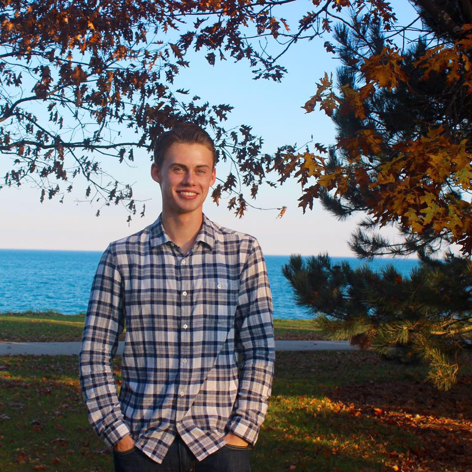

Our Team
Conor McGeehan
Conor is a junior studying computer science and design engineering. In addition to CS + Social Good, he is a member of Design for America and the Evanston Boxing Club, and is an executive board member of Delta Tau Delta.
Last year, I felt lost in the field of computer science because I couldn't se the positive impacts of what I would be doing after college. I hope to foster an environment in CS + Social Good where other students can realize the possible social implications of technology work, and to offer our members a chance to work on such projects while they are still completing their studies.
Eric Brown
 Eric is a senior studying industiral engineering and computer science. He spends his time working closely with projects at the Garage, and seeking involvement in the healthcare industry.
Eric is a senior studying industiral engineering and computer science. He spends his time working closely with projects at the Garage, and seeking involvement in the healthcare industry.
Will Parsons
 Will Parsons is a junior studying computer science and and psychology. Will also serves on the executive board of Delta Tau Delta.
Will Parsons is a junior studying computer science and and psychology. Will also serves on the executive board of Delta Tau Delta.
Anna Deng
Anna is a sophomore studying computer science. Anna is also an executive board member for the Ayers Residential College, and a member of .dev and Women in Computing.